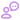

online - gratuito
Sorteador de Números
Quero sortear:
Defina o intervalo e a quantidade de números, clique em "Sortear" e veja os resultados na tela. É rápido e fácil!
Configurações do sorteio
Resultado do sorteio
1º resultado
23
12

Como funciona o sorteador de números?
O sorteador utiliza um algoritmo de geração aleatória para criar números dentro do intervalo especificado pelo usuário.
Posso escolher o intervalo dos números?
Sim, você pode definir os valores mínimo e máximo para o intervalo dos números sorteados.